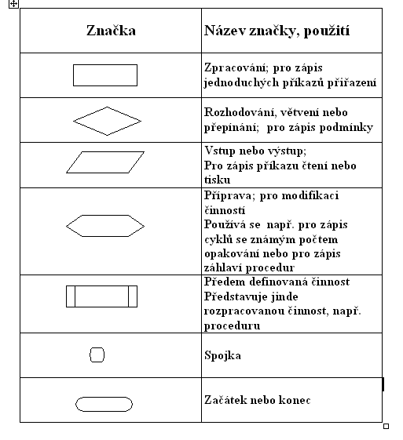

Algoritmizace a programování — cykly, větvení
gvm/maturita/ict/3
- využití cyklů
- cykly for a while (s podmínkou na začátku/konci)
- řídící proměnná, počet opakování, zacyklení
- if, switch
- binární větvení, neúplné větvení
- vývojové diagramy
Cykly.docx
Cykly
- Využití
- Chceme nějaký postup zopakovat několikrát
For cyklus
- Máme předem definovaný počet opakování
- Python:
a = int(input())
for i in range(5):
a = a*2
- Násobí proměnou a ze vstupu číslem dva, opakuje se 4x
for x in range(2, 20, 2):
print(x)
- Začíná u čísla 2, <20, při každém cyklu se i zvětší o 2
ovoce = ["jablko", "banan", "hruska"]
for x in ovoce:
print(x)
- Vypíše všechny prvky seznamu ovoce
slovo = "ahoj"
for x in slovo:
print(x)
- Vypíše všechna písmena slova slovo
While cyklus
- S podmínkou na začátku
- Provádí se dokud je podmínka pravdivá, nebo je přerušen příkazem
break
i = 1
while i < 5:
print(i)
i+=1
- Dokud je i menší než 5, vypíše ho a zvětší o 1
While s podmínkou na konci
- Není v Pythonu, lze to však obejít
- Vždy se provede alespoň jednou → podmínka se testuje až na konci, pro provedení
- Ukázka z Javy:
int soucet = 1;
do {
System.out.println("Soucet je: " + soucet);
soucet++;
} while (soucet < 11);
- Jak na to v Pythonu?
- While začíná podmínkou, která je vždy pravda
- V průběhu cyklu musí být if, který pomocí break cyklus ukončí
- Pokud to tam nebude, program se zacyklí
a = 1
while 0=0:
a += 1
if a>5:
break
If, switch, (ne)úplné větvení
- Podmínka if (neúplné větvení):
a = 5
if a <10:
print("a je mensi nez 10")
- Můžeme doplnit o else → to se vykoná v případě, že podmínka je nepravdivá
- If, else (úplné větvení):
a = 5
if a <10:
print("a je mensi nez 10")
else:
print("a je vetsi nebo rovno 10")
- Podmínky můžeme spojovat pomocí logických operátorů — AND, OR
if a>0 and a<5:
print("neco")
Switch
- Není v Pythonu (nemělo by být ani v otázkách)
- Využívá se např. v Javě
int month = 2;
String monthString;
switch (month) {
case 1: monthString = "January";
break;
case 2: monthString = "February";
break;
case 3: monthString = "March";
break;
case 4: monthString = "April";
break;
...atd
- Ekvivalent tohoto je v Pythonu
elif
a = 33
b = 33
if b > a:
print("b is greater than a")
elif a == b:
print("a and b are equal")
Binární větvení
- Binární větvení — pouze dvě možnosti, které se po podmínce mohou stát
- Např. v Pythonu
if ... else
- Nebinární větvení — je více možností, které mohou proběhnout
- = od podmínky vede více než 2 cesty
- Např. v Pythonu
if ... elif ... elif... else
Vývojové diagramy
